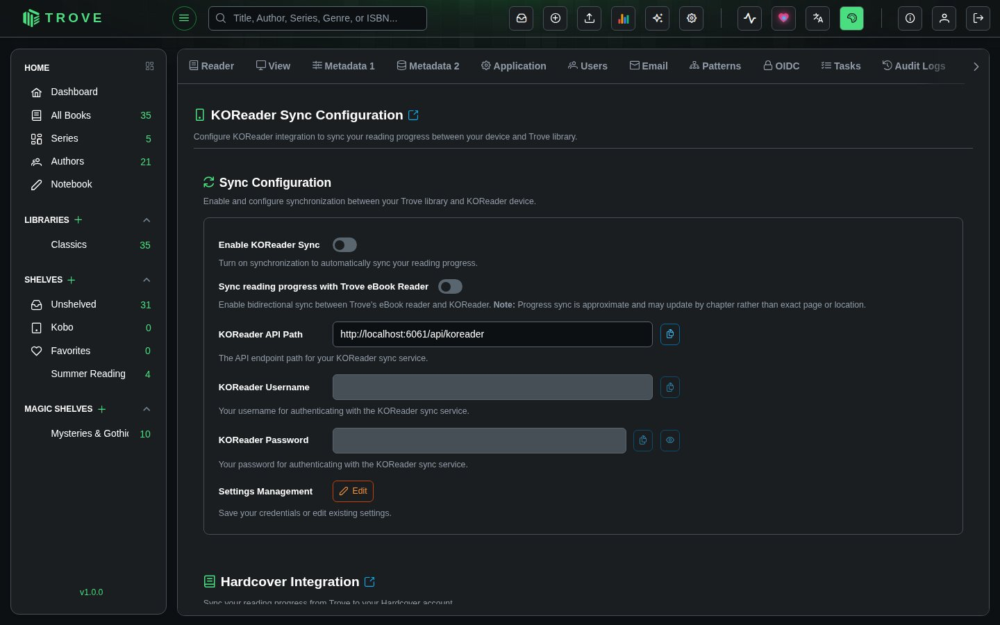
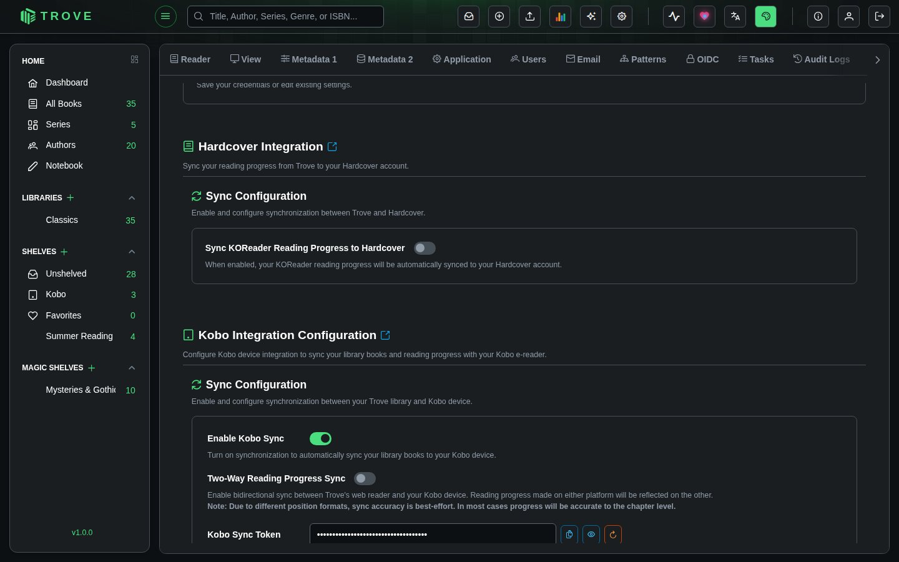
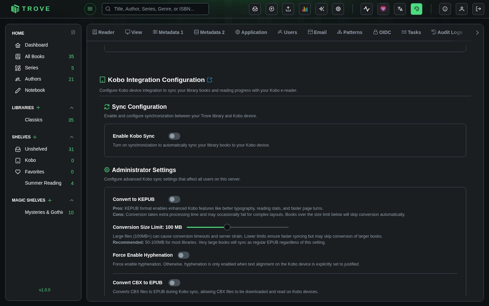
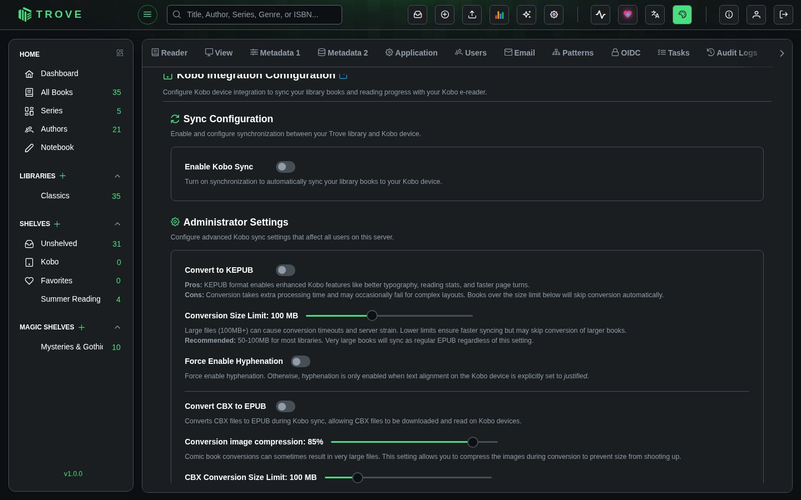

Device settings
The Devices page lets you configure integrations with external reading devices and services. It contains three sections: KOReader Sync, Hardcover Integration, and Kobo Integration.
Navigate to Settings > Devices to access this page.
KOReader Sync
Sync your reading progress between your KOReader device and Trove. When enabled, reading progress updates on your KOReader device are automatically reflected in Trove.
Requires the KOReader Sync permission.

Sync Configuration
| Setting | Description |
|---|---|
| Enable KOReader Sync | Turns on synchronization. Only available after credentials are saved. |
| Sync reading progress with Trove eBook Reader | Enables bidirectional sync between KOReader and Trove's built-in web reader. Progress is approximate and may update by chapter rather than exact page. |
Credentials
| Field | Description |
|---|---|
| KOReader API Path | The API endpoint to configure on your KOReader device. Auto-generated from your Trove URL (e.g., https://trove.example.com/api/koreader). Read-only with a copy button. |
| KOReader Username | Your username for authenticating with the sync service. |
| KOReader Password | Your password (minimum 6 characters). |
Click Edit to modify your credentials, then Save to persist them. The sync toggles are disabled until credentials are saved.
Hardcover Integration
Sync your KOReader reading progress from Trove to your Hardcover account. When enabled, progress updates from KOReader are automatically pushed to Hardcover.
Requires the KOReader Sync or Kobo Sync permission.

Configuration
| Setting | Description |
|---|---|
| Sync KOReader Reading Progress to Hardcover | Enable or disable the sync. When enabled, the API Key field appears. |
| Hardcover API Key | Your personal API key from Hardcover. Get it from hardcover.app/account/api. This key is private to your account. |
Step-by-step setup is in KOReader.
Kobo Integration
Sync your Trove library and reading progress with your Kobo e-reader. Books on your Kobo shelf are delivered to the device, and reading progress can be synced bidirectionally.
Requires the Kobo Sync permission.

Sync Configuration
| Setting | Description |
|---|---|
| Enable Kobo Sync | Turns on Kobo synchronization. Automatically creates a "Kobo" shelf in your library. Disabling deletes the Kobo shelf. |
| Two-Way Reading Progress Sync | Enables bidirectional sync between Trove's web reader and your Kobo device. Due to different position formats, accuracy is best-effort and typically accurate to the chapter level. |
| Kobo Sync Token | Your unique authentication token for the Kobo device. Keep this secure. Use the regenerate button if you need a new token (invalidates the previous one). |
Reading Thresholds
| Setting | Range | Default | Description |
|---|---|---|---|
| Mark as Reading at | 1-10% | 1% | Books are marked as "Reading" when progress exceeds this percentage. |
| Mark as Finished at | 90-100% | 99% | Books are marked as "Finished" when progress reaches this percentage. Accounts for books where the last few pages are acknowledgments or an index. |
Auto-Add New Books
| Setting | Default | Description |
|---|---|---|
| Auto-Add New Books to Kobo Shelf | Off | When enabled, newly added books are automatically added to your Kobo shelf for syncing, so you don't have to add each book manually. |
Kobo Administrator Settings
These settings are only visible to admin users and affect all Kobo sync users on the server.

EPUB to KEPUB Conversion
| Setting | Default | Description |
|---|---|---|
| Convert to KEPUB | On | Converts EPUB files to KEPUB format during sync. KEPUB enables enhanced Kobo features like better typography, reading statistics, and faster page turns. Conversion may fail for complex layouts. |
| Conversion Size Limit | 100 MB | Maximum file size for KEPUB conversion (1-250 MB). Books exceeding this limit sync as regular EPUB. Recommended: 50-100 MB for most libraries. |
| Force Enable Hyphenation | Off | Forces hyphenation in converted books. Without this, hyphenation is only enabled when text alignment on the Kobo device is set to justified. |
CBX to EPUB Conversion
| Setting | Default | Description |
|---|---|---|
| Convert CBX to EPUB | Off | Converts comic book archives (CBZ/CBR/CB7) to EPUB during sync so they can be read on Kobo devices. |
| Conversion image compression | 85% | Compresses images during CBX conversion to keep file sizes manageable (1-100%). |
| CBX Conversion Size Limit | 100 MB | Maximum CBX file size for conversion (1-500 MB). Files exceeding this limit are not converted or synced. Recommended: 100-200 MB for most comic libraries. |
Notes
- The Devices page shows all three sections on a single scrollable page. Each section operates independently.
- KOReader credentials are stored per user. Each user manages their own sync settings.
- Kobo sync creates a dedicated "Kobo" shelf automatically. Add books to this shelf (or enable auto-add) to sync them to your device.
- Hardcover sync is triggered automatically whenever KOReader progress is updated. There is no manual sync button.
- Reading progress from KOReader and Kobo is stored separately, so both devices can be used independently.
- KEPUB conversion uses the kepubify tool and is handled server-side.
- All device settings changes are reflected immediately without needing to restart the server.